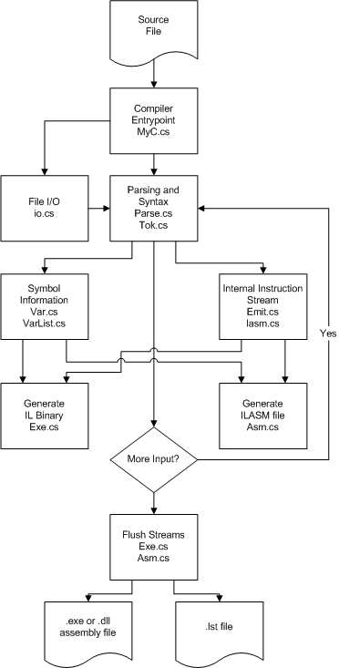

The goal of the MyC compiler is to show the implementation of various features of the CLI.
The following table shows the command-line options for this sample.
| Option | Description |
|---|---|
| /debug | Generates debug information. |
| /nodebug | Prevents generation of debug information. |
| /list | Generates an assembly listing (.asm). |
| /dll | Creates a DLL assembly. |
| /exe | Creates an executable assembly. |
| /outdir:path | Creates output files in the current directory. |

The goal of the MYC compiler is to show common intermediate language (CIL) instructions and the CLI in action.
The compiler itself is a simple recursive descent parser with a single pass code generator. It generates an assembler source file which is then used as input to the IL Assembler.
The language is a subset of the C language with simplified declarations, both external and local.
The only supported data types are int and void. Limiting these choices allows a simpler sample compiler design.
Variables can be declared static or local. Implicit static declarations occur outside of function declarations. Local declarations can occur only at the beginnings of functions prior to statements.
For example:
int func1()
{
int y;
}
int x;
int func2()
{
static int z;
};
In this example the variable x is a static declaration (by default) and the variable y is a local variable in function func1(). The variable z is actually a static, even though it is declared within a function.
letter ::= "A-Za-z";
digit ::= "0-9";
name ::= letter { letter | digit };
integer ::= digit { digit };
ident ::= name | function_call;
function_call ::= name "(" [expr {, expr}] ")";
factor ::= (ident | integer | "(" expr ")" );
unary_factor ::= ["+"|"-"] factor;
term1 ::= ["*"|"/"] factor;
term0 ::= factor { term1 };
first_term ::= unary_factor term1;
math_expr ::= first_term { ["+"|"-"] term0 }
rel_expr ::= math_expr ("=="|"!="|"<"|">"|">="|"<=") math_expr;
not_factor ::= ["!"] rel_expr;
term_bool ::= not_factor { ("&" | "&&") not_factor };
bool_expr ::= term_bool { ("|" | "^") term_bool };
expr ::= bool_expr;
assign = ident "=" expr;
assign_stmt ::= assign ";" ;
if_stmt ::= "if" "(" expr ")" stmt_block [ "else" inner_block ];
while_stmt ::= "while" "(" expr ")" inner_block;
for_stmt ::= "for" "(" assign ";" expr ";" assign ")" inner_block
break_stmt ::= "break" ";";
cont_stmt ::= "continue" ";";
ret_stmt ::= "return" expr ";";
stmt ::= (
if_stmt
| while_stmt
| for_stmt
| break_stmt
| cont_stmt
| ret_stmt
| assign_stmt
);
inner_block ::= "{" { stmt } "}";
outer_block ::= "{" { inner_decl } { stmt } "}";
inner_decl ::= [ class ] type ident { "," ident } ";";
class ::= "extern" | "static" | "auto";
type ::= "int" | "void";
params ::= type ident { , type ident };
outer_decl ::= [ class ] type ident { "," ident } ";";
func_decl ::= [ class ] type ident "(" params ")" outer_block;
The sample source is found in sscli20\samples\compilers\myc\src directory. The source files are:
The build output location is %_NTTREE%\samples\compilers\myc. The output file is an executable assembly named myc.exe.
All samples are built from the buildall script.
You can also build all the
samples by switching to the root of the sample directory, sscli20\samples, and typing
build -c.
You can build this specific sample by switching to the sample directory and typing
build -c.
Because the MyC language does not support referencing external assemblies, use the Runtime Debugger to step through test applications built using MyC.
clix myc /debug inputfile
where inputfile is the name of a MyC source file. For example:
clix myc /debug tflow.myc
cordbg tflow.exe
The debug line number count is off by 1.
Copyright (c) 2006 Microsoft Corporation. All rights reserved.